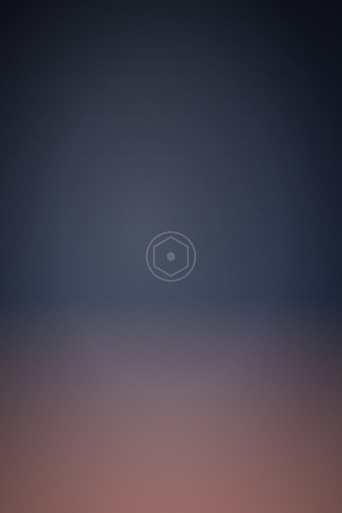
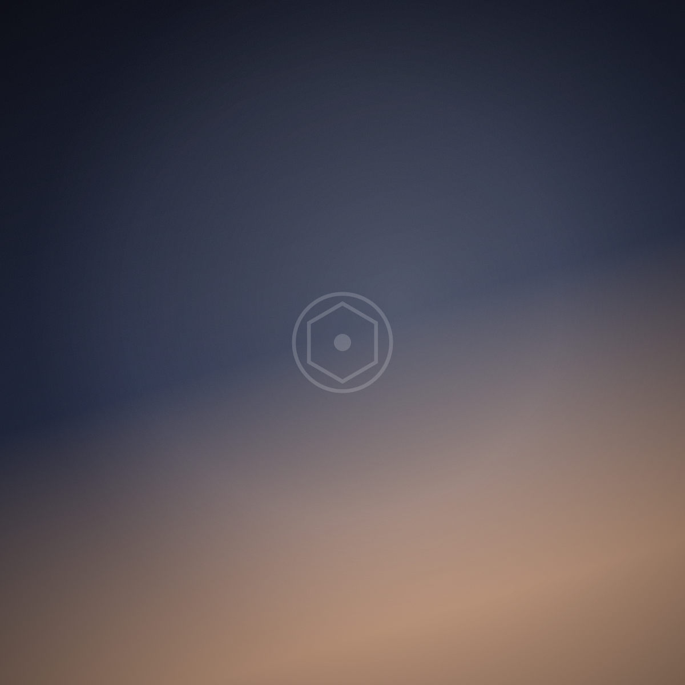

- Home
- Work
Everything we are allowed to show you.
Some of the best photographs we have ever taken belong to families who would rather they stayed in the family, and we think that is the right instinct. What follows is the rest.







Seen something that looks like your day?
Tell us the date. Even a rough window is enough for us to say whether we are free and what it would cost.
Check your date